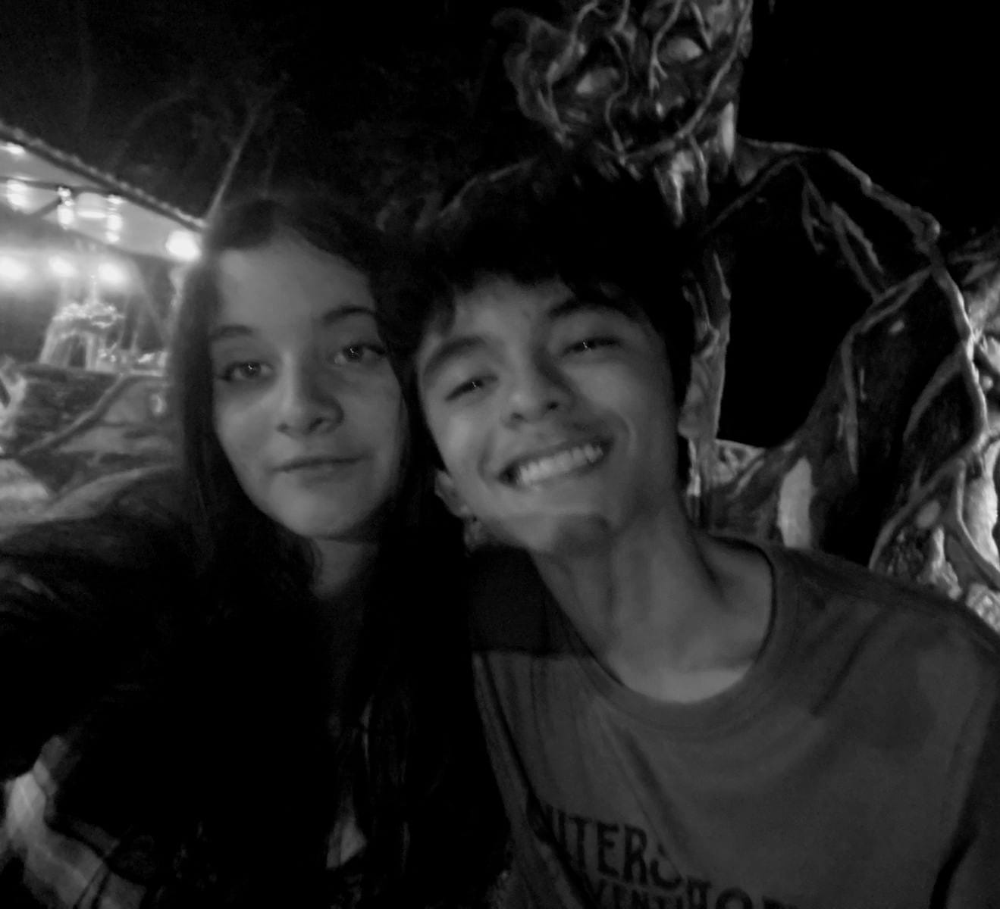

te adoro
El amor que te tengo es algo inmenso sin una explicacion como tal,
es algo que no se puede describir con palabras, es algo que se siente en el alma y en el corazon.
Pero hoy te quiero decir, que por mas extraña que sea la manera en como te lo expreso,
siempre voy a querer darte a entender, que eres la lunita que siempre iluminara mi camino,
quiero que entiendas que todos los aspectos que tienes y me demuestras, son aspectos
que me hacen demasiado feliz. Desde la mas pequeña risa, hasta la mas evidente indirecta
sarcastica, "que finjo no entender", jajsjajsja.
eres la representacion mas pura de lo que siempre he querido y voy a querer,
por que eres mi niña, la niña que mas feliz me hace en el mundo, y si te puediera decir todo todo
lo que siento por ti, no me alacanzaran los dias ni los años, para expresarte mi amor eterno.
Aunque aun asi, te diria:
que se quede el infinito sin planetas
o que pierda el ancho mar su genialidad
pero, lo bello de tus ojos que no muera
y lo hermoso de tu piel, se quede igual
si las crisis tuvieran "belleza"
o si las guerras tuvieran un color
no seria tan poca mi certeza,
como aquella de quedarme sin amor
me gustas tu,
y tu,
y tu,
y nadie mas que tuu
me encantas tu
y tu,
y tu,
y solamente tu,
y tu,
y tuu.
Ojos bellos,
piel hermosa,
que me van a enamorar...
Cada dia que pasa te amo mas y mas, y cada momento a tu lado es un regalo que agradezco infinitamente. Eres mi todo, mi vida, mi amor eterno.
te aprecio
A veces me detengo a pensar en lo afortunado que soy de tenerte en mi vida. Tu presencia me acompaña todos los dias y desde lo invisible
me abraza y me hace sentir agradecido de estar con tigo. Tu sonrisa tiene el poder de iluminar hasta mis pensamientos más oscuros.
Aprecio cada palabra, cada gesto, cada llamada, cada preocupacion, cada pequeño detalle. Eres esa persona que me escucha,
que me comprende y que me apoya incluso cuando no tengo las palabras correctas. Gracias por tu paciencia, por tu ternura y por tu forma única de hacerme sentir especial.
Si pudiera, te regalaría el universo entero, pero como no puedo, te entrego mi corazón y mi gratitud infinita. Eres mi refugio, mi paz y mi alegría.

Gracias por existir y por ser tú, simplemente tú.
es lo que mas me hace feliz...
te quiero
Decir "te quiero" es quedarse corto para todo lo que siento por ti. Es una frase sencilla, pero esa simple frase
llena mi mente de recuerdos y de gratitud, es esa frase la cual tanto te repetia y aun asi tanto sigo sintiendo,
decirte te quiero representa un mundo de emociones, de sueños y de promesas, a tu lado.
Te quiero en los días buenos y en los días malos, cuando reímos juntos y cuando el silencio nos acompaña. Te quiero por tu forma de ver la vida, por tu risa contagiosa, por tu nobleza y por tu fuerza.
Cada momento contigo es un regalo, y cada recuerdo a tu lado es un tesoro que guardo en lo más profundo de mi corazón.
Ademas de sentir que ese te quiero, es una frase que surgio gracias a lo mucho que me gustas, pero cabe resaltar que gracias a lo mucho que te amo
es que esa frase hoy en dia a evolucionado tanto, por que claro, te quiero, y te quiero demasiado, pero en mi alma siempre voy a guardar ese "te amo", que representa
lo mucho que te quiero y voy a querer, solo que dicho de otra manera, jsjsjajsja.
En el silencio late mi corazón,
buscando en tus ojos la dulce razón.
Entre susurros digo: te quiero,
un sentimiento puro, profundo y duradero.
Eres la calma que abraza mi vida,
la luz que en la sombra siempre me guía.
Nuestro amor me hace ser muy sincero,
y siendo sincero te digo: te amo, te adoro, te quiero.
Te quiero hoy, mañana y siempre, porque eres mi razón, mi inspiración y mi mayor alegría.
te anhelo
Cuando no estás cerca, mi corazón te busca en cada rincón, en cada canción, en cada suspiro. Te anhelo con la intensidad de mil estrellas, con la calidez de un atardecer.
Anhelo tus abrazos, tus palabras, tu compañía. Anhelo compartir contigo cada sueño, cada meta, cada instante de mi vida.
Eres la persona con la que quiero caminar de la mano, descubrir el mundo y construir un futuro lleno de amor y grandeza.
Y es que siempre has sido lo que ronda por mi cabeza, esas mariposas que inundan mi estomago, esa sonrisa que genera mi calma,
y aunque no te lo pueda mostrar con realmente lo siento, quiero que veas la manera en que mi mente se ilumina al pensar en ti,
Te anhelo porque eres mi hogar, mi destino y mi mayor deseo. No importa la distancia ni el tiempo, siempre te llevaré conmigo, en mi mente y en mi corazón.